最全Pycharm教程（4）——有关Python解释器的相关配置
1、准备工作
（1）Pycharm版本为3.4或者更高。
（2）电脑上至少已经安装了一个Python解释器。
（3）如果你希望配置一个远程解释器，则需要服务器的相关支持。
2、本地解释器配置
配置本地解释器的步骤相对简洁直观：
（1）单击工具栏中的设置按钮。
（2）在Settings/Preferences对话框中选中 Project Interpreter页面，在Project Interpreter对应的下拉列表中选择对应的解释器版本，或者单击右侧的设置按钮手动添加。
（3）在接下来的情况下，选择Add Local选项，然后选择预期的解释器（Python的可执行文件）。
值得一提的是，对于一些预先定义好的虚拟环境，同样可以将其作为解释器进行添加。
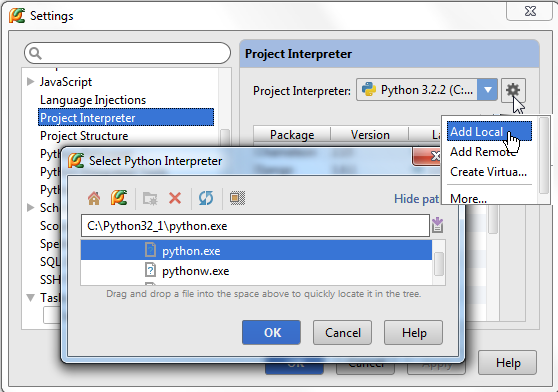
3、远程解释器配置
在配置远程解释器时，使用基于SSH连接的设置方法（确保服务器已经提供了响应的远程支持）。
4、通过已有的部署设置来配置远程解释器
首先，我们需要一台服务器，可以通过主菜单的Tools | Deployment，然后单击Configuration来定义一个：
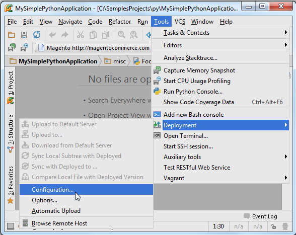
接下来在 Deployment对话框中单击绿色的加号来创建一个服务器，输入名称，选择对应类型（一般为SFTP），以及其他一些必要设置（host, port, login name等等）。确认无误后单击Test connection，弹出Connection successful!的消息框后说明解释器连接成功。
接下来，在主工具栏中单击设置按钮，在Settings/Preferences对话框中打开 Project Interpreter页面，单击设置图标然后选择Add Remote：
在Configure Remote Python Interpreter对话框中，单击Deployment configuration按钮来设置已有的SSH服务器（比如你之前定义的这个）。
在列表中选择想要的远程服务，选择完成后会发现所有的服务器设置已经自动完成填充。
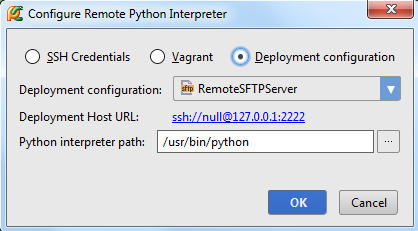
此时这个远程解释器可以作为当前工程的解释器来使用了，注意这里所有的远程解释器在命名时都会加一个前缀"Remote"。
5、基于SSH证书的远程解释器
如果你没有提前定义服务器设置，你也可以按照以下步骤手动建立特定的连接：
1、单击主工具栏的设置按钮打开Settings/Preferences对话框，选择Project Interpreter页面，单击设置按钮然后选择Add Remote：
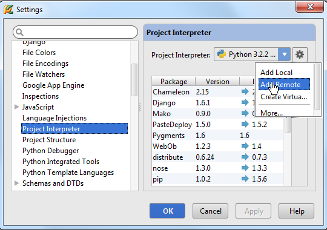
接下来，在Configure Remote Python Interpreter对话框中，选中SSH credentials，然后键入服务器的Host、端口号、用户姓名等等：
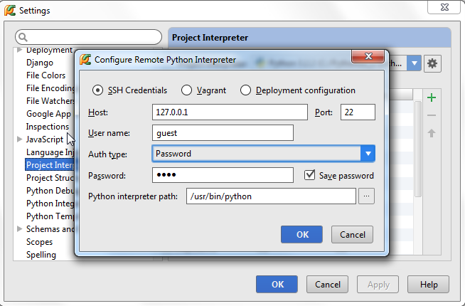
此时这个远程解释器可以作为当前工程的解释器来使用了，注意这里所有的远程解释器在命名时都会加一个前缀"Remote"。
6、基于virtual box的远程解释器
另外一种定义远程解释器的方法是通过Vagrant configuration文件。在使用virtual boxes之前提前准备一些工作，所以在开始之前先确认一下几方面问题：
（1）Vagrant已经在电脑上正确安装，并且已经创建好了相关的基础结构。
（2）Oracle's VirtualBox已经在电脑上正确安装。
（3）确保将以下两个可执行文件的路径添加到系统的环境变量中：
Vagrant安装目录下的vagrant.bat文件，这一步应该会由安装程序自动来完成。
Oracle's VirtualBox安装目录下的VBoxManage.exe文件路径。
最后还要确保Vagrant的相关插件能够正常使用。
首先，你需要一个virtual box，这需要我们手动进行配置，但Pycharm提供了一些列辅助工具来是的我们可以在当前IDE环境下完成设置。
在主工具栏中单击设置按钮，进入Settings/Preferences对话框，打开Vagrant页。
留意Vagrant可执行文件的路径以及Vagrant实例所在的文件夹路径：
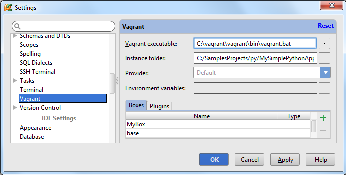
如果已经实现定义了virtual box，它将会出现在下拉列表中以方便我们进行选择。如果当前没有合适的virtual box可选，则可以通过单击绿色的加号来新建一个。
接下来需要初始化Vagrant box。在主菜单上单击Tools | Vagrant，选择Init in Project Root，选择vagrant up命令：
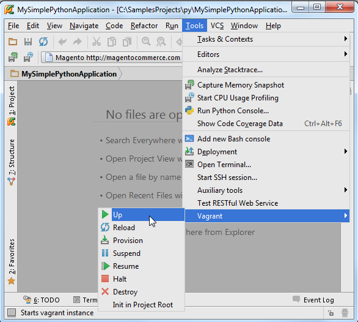
接下来再次进入Settings/Preferences对话框，打开 Project Interpreter页面然后选择Add Remote：
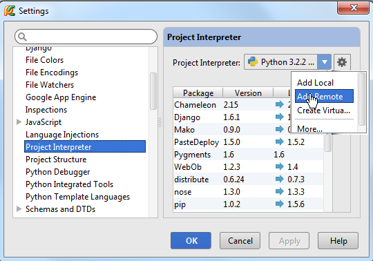
在Configure Remote Python Interpreter对话框中自定义服务器的相关设置，这些设置可以通过之前定义的配置文件进行替换，因此选中Vagrant选项。
所有的服务器设置会自动填充如下：
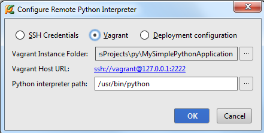
此时这个远程解释器可以作为当前工程的解释器来使用了，注意这里所有的远程解释器在命名时都会加一个前缀"Remote"。
更多信息参见 dedicated Vagrant tutorial。
7、创建虚拟环境
（1）打开Project Interpreter页面（通过单击工具栏上的设置按钮）。
（2）单击设置图标并选择Create Virtual Environment。
（3）在Create Virtual Environment对话框中输入新的虚拟环境的名称、位置，同时制定虚拟环境所依赖的Python解释器：
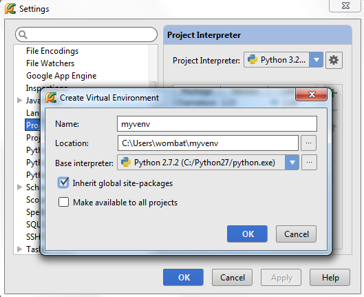
在创建虚拟环境的过程中可能需要花费一些时间，Pycharm会给出进度条来指示当前的创建进程：

8、第三方库以及路径的配置
在配置好虚拟环境之后，你将会看到当前安装的所有第三方库，Pycharm会列出当前安装的每个第三方库的版本以及响应的最新版本，你可以决定是否对其进行升级：
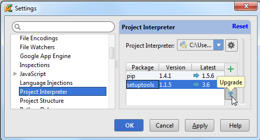
为了查看安装路径，可以通过单击对话框中的设置按钮，选择More，此时可以查看所有可用的Python解释器：
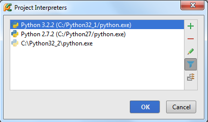
选中一个解释器，然后单击右侧工具栏中的按钮来查看其对应的路径结构：
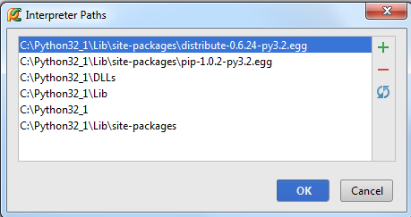
如果一个解释器已经更新过，最好通过单击来更新其路径。